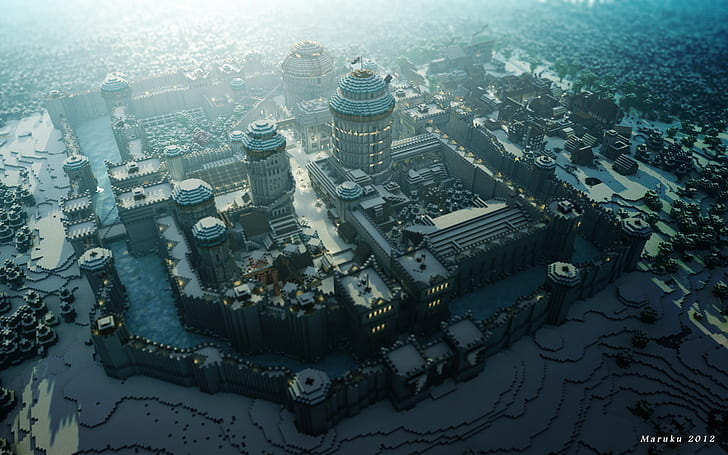

Historia e Identidad
Winterfell fue fundada hace mas de ocho mil años durante la Era de los Héroes por Brandon el Constructor, primer Rey del Invierno y ancestro de la Casa Stark. La fortaleza y la urbe que la rodea surgieron tras la finalización de la Larga Noche como un baluarte inexpugnable para proteger a los reinos de los hombres contra las amenazas del Norte. Su identidad esta profundamente ligada al honor, al deber, la sobriedad y la resistencia; sus habitantes entienden que la supervivencia exige unidad, preparación constante y el fiel cumplimiento del lema ancestral de la casa gobernante: "Se acerca el invierno".

Leer mas..Barrios y Zonas Principales
Costumbres y Tradiciones
La cultura de los habitantes de Winterfell está marcada por la geografía implacable del Norte y la herencia de los Primeros Hombres. Destaca su devoción por los Antiguos Dioses, cuyos rostros tallados en los árboles corazón son venerados en silencio y sin templos ni sacerdotes. Mantienen como norma sagrada las leyes de la hospitalidad —donde compartir el pan y la sal garantiza la protección mutua entre anfitrión y huésped— y la convicción de que "el hombre que dicta la sentencia debe blandir la espada", haciendo de la justicia un acto directo, personal y responsable.